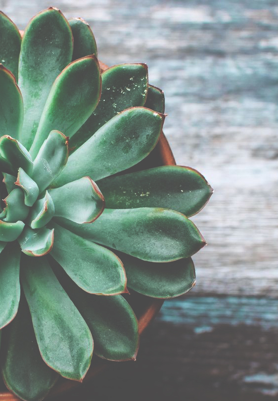

Our Story...
Hey there, we're a fully vegan joint, as of July 2019, specializing in breakfast sandwiches & burgers. We aspire to make vegans everywhere still feel like part of the juicy burger game. We started out as a food cart in Downtown Portland four years ago and expanded to our very own brick and mortar two years ago. It's been a wild journey but we are so grateful to all of our lovely and rad customers that made this dream possible. We love ya'll!
